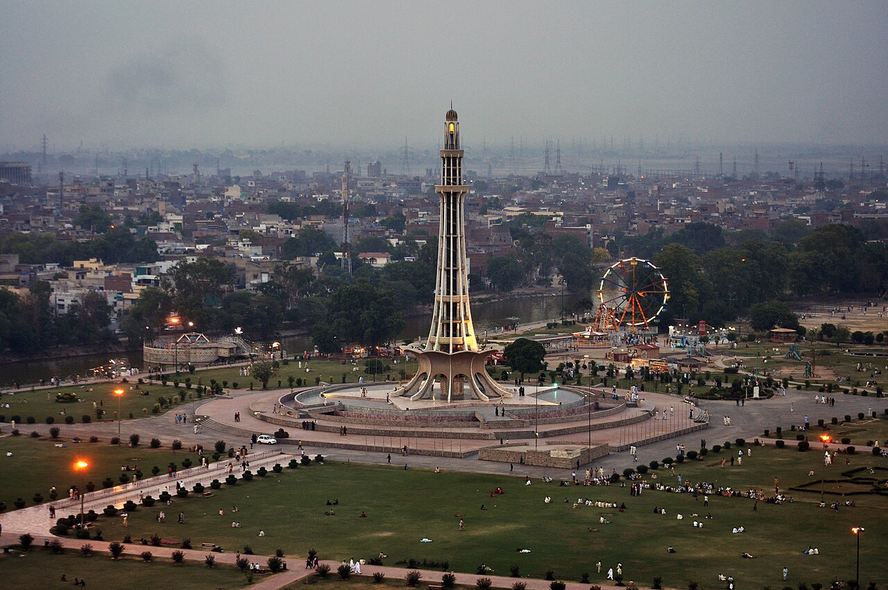
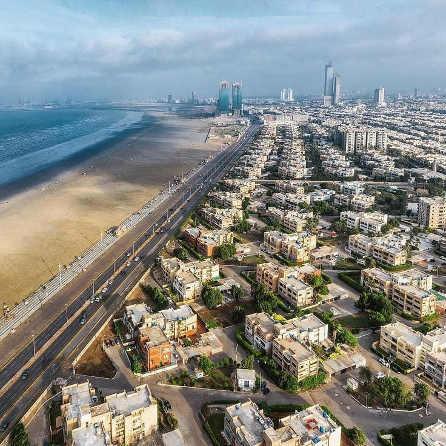
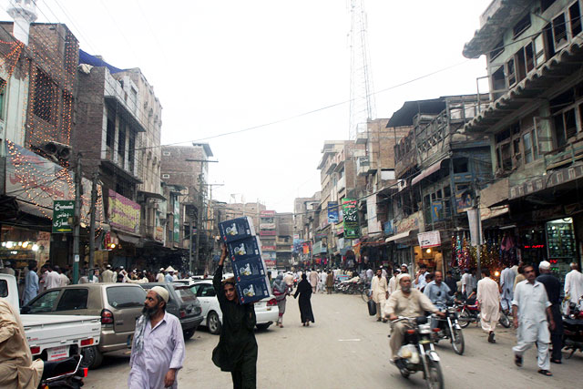
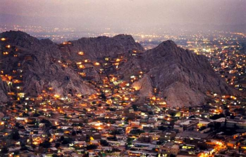
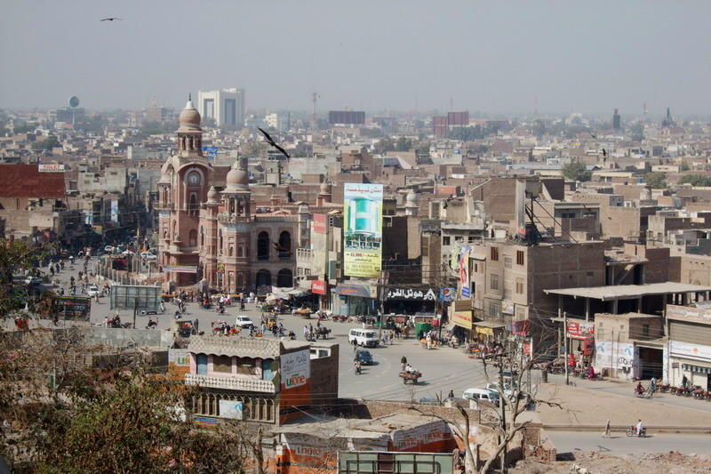

Explore Pakistan's Cities

Islamabad
The planned capital city, nestled against the Margalla Hills. Known for greenery, wide boulevards, and the magnificent Faisal Mosque.
Explore Islamabad →
Lahore
The cultural heart of Pakistan. Home to the Lahore Fort, Badshahi Mosque, Walled City, and some of the country's finest food.
Explore Lahore →
Karachi
Pakistan's largest city and economic engine, a vibrant coastal metropolis on the Arabian Sea with diverse food and culture.
Explore Karachi →
Peshawar
One of the oldest cities in South Asia, the gateway to the Khyber Pass and a centre of Pashtun culture and history.
Explore Peshawar →
Quetta
The capital of Balochistan, surrounded by mountains and famous for its dried fruit, carpets, and proximity to ancient sites.
Explore Quetta →
Multan
The City of Saints — one of the oldest cities in Pakistan, known for its Sufi shrines, blue pottery, and embroidered cloth.